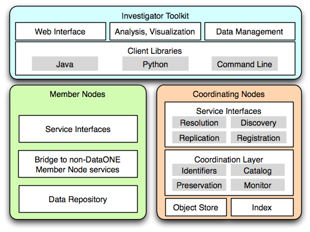

DataONE Overview¶
The major goal of NSFs DataNet program is to catalyze development of a system addressing the vision outlined in Chapter 3 (Data, Data Analysis, and Visualization) of NSF’s Cyberinfrastructure Vision for 21st Century Discovery in which “science and engineering digital data are routinely deposited in well-documented form, are regularly and easily consulted and analyzed by specialists and non-specialists alike, are openly accessible while suitably protected, and are reliably preserved.” The DataNet project DataONE (Data Observation Network for Earth) is a federated data network built to improve access to Earth science data, and to support science by:

engaging the relevant science, data, and policy communities;
facilitating easy, secure, and persistent storage of data;
disseminating integrated and user-friendly tools for data discovery, analysis, visualization, and decision-making.
Figure 1. An overview of the major components of the DataONE architecture.
There are three major components in the DataONE infrastructure: Member Nodes which represent data repositories, Coordinating Nodes which serve data management and discovery services, and the Investigator Toolkit which contains a variety of end user tools for interacting with the infrastructure.
Participation in the DataONE infrastructure as a Member Node or by using the Investigator Toolkit (i.e. implementing or utilizing DataONE service interfaces) provides several fundamental services upon which additional infrastructure, services, applications and communities may be built. These core, community building services include:
promotion of data preservation through automated replication of data and metadata
support for arbitrary globally unique identifiers with guaranteed resolution and dereferencing
extensible search and discovery services
federated management of user identities and access control
Member Nodes are primarily existing data repositories (e.g. the Knowledge
Network for Biodiversity, ORNL DAAC, Partnership for Interdisciplinary
Studies of Coastal Oceans) that already fill an important role in their
respective communities supporting data management, curation, discovery and
access functions. There are two main technical aspects to Member Node
participation in DataONE - the service interfaces to be implemented (i.e. the
Member Node APIs), and the content that is to be served.
At a fundamental level, all content in DataONE is treated as discrete,
immutable objects, each of which has a unique identifier. A Member Node would
be considered functionally complete if it were able to support the required
services interfaces for Tier 1 participation (i.e. public access, read
only content), and so enable the discovery of all objects available on the
Member Node (through MNRead.listObjects()), low level description of
each object (through MNRead.getSystemMetadata()), retrieval of the
object given it’s identifier (MNRead.get()), and reporting of activity
(MNCore.getLogRecords()).
There are basically three types of object being made available by Member Nodes and processed by DataONE: data object`s, :term:`science metadata objects, and resource map documents. Each of these are identifiable by their unique identifier (PID), and each has associated System Metadata which describes the type, size, and so forth of the object.
Data objects are treated as opaque blobs. The object availability is
registered by the coordinating nodes, and the blob is retrievable via the
MNRead.get() method given its identifier.
Science metadata objects are metadata documents such as EML, FGDC, ISO19115 and so forth that provide metadata describing some data object(s). These are represented in XML according to their respective schema.
Resource map documents describe the relationships between data and metadata - they are basically RDF documents that conform to the OAI-ORE specifications.
From an object or class inheritance perspective, science metadata and resource maps might be considered specializations of the data object type in that more functionality is provided to DataONE by those types of object.
From a purely technical perspective, a Member Node may be completely functional and not provide any metadata or resource map documents. It will mean that the content provided will not be discoverable through the search interfaces.
Member Nodes may implement a subset of the full suite of Member Node APIs, and in this way participate in the network with minimal effort (e.g. as a “read only” or Tier 1 Member Node). Member Nodes that implement the full suite of APIs (a Tier 4 Member Node) will be able to accept data from other Member Nodes which in turn assists with data preservation by ensuring multiple copies of all content are available, thus reducing the risk that content will be lost or inaccessible if a Member Node should go offline.
Member Nodes may eventually number in the thousands as progressively smaller repositories come online, perhaps even to the level of individual labs deploying their own Member Node to take advantage of the broad infrastructure enabled by DataONE.
Coordinating Nodes make critical services available through the APIs that enable identifier resolution, data preservation, data discovery, and supplement the federated identity system. Coordinating Nodes replicate all content between themselves, an in doing so create a small set (3-6 nodes) of geographically and institutionally isolated systems that ensure ongoing operation of the infrastructure should any particular node be inaccessible. Coordinating Nodes maintain complete copies of all science metadata (detailed descriptions of science data objects and collections) and system metadata (low level metadata describing the type, size, ownership, and locations of data and) and index this information to enable data discovery services.
Investigator Toolkit is a suite of software libraries, tools, and applications that support interaction with the DataONE infrastructure through the REST service APIs exposed by the Coordinating and Member Nodes. Low level libraries are initially available in Python and Java which assist application developers to take advantage of the core services exposed by DataONE participants. For example, an R plugin has been developed using the Java library. Enabling this plugin within a R script enables discovery, retrieval, and storage of content directly in the DataONE infrastructure. Similar extensions are being developed for workflow tools such as Kepler, VisTrails and Science Pipes to enable interaction with the core DataONE services.
The DataONE infrastructure was released for public use in July 2012 and at that point supported identifier resolution, content discovery and retrieval and the federated identity management infrastructure. The replication service was implemented with release 1.1 of the infrastructure which occurred in May of 2013 and completed the core services of the infrastructure.